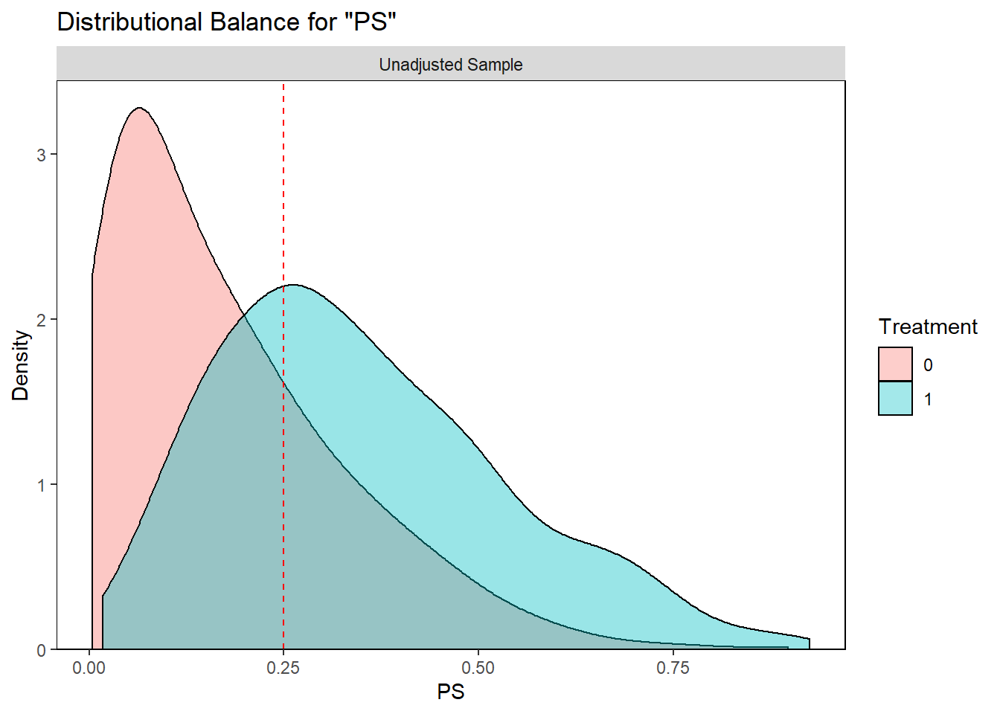
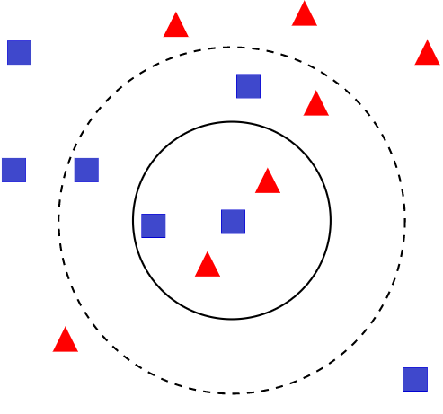

Chapter 5 Step 2: Propensity score Matching
- PS is a continuous variable.
- Exact matching is not feasible.
- Below is an example of control patient (treatment = 0) with PS = 0.25
- We want to find a treated patient (treatment = 1) with PS closest to 0.25.
require(cobalt)
library(ggplot2)
bal.plot(analytic, var.name = "PS",
treat = "diabetes",
which = "both",
data = analytic) +
geom_vline(xintercept=0.25, linetype="dashed", color = "red")
5.1 Matching method NN
Match using estimates propensity scores with the following choices (simplest choices)
- Matching method:
- nearest-neighbor (NN) matching
- Can the same subject be chosen only once?:
- matching without replacement
- Closeness of the treated-untreated subjects:
- with caliper = .2*SD of logit of propensity score
- Ratio of treated-untreated subjects:
- with 1:1 ratio (pair-matching)

5.2 Initial fit
1:1 NN Match using estimates propensity scores
set.seed(123)
require(MatchIt)
match.obj <- matchit(ps.formula, data = analytic,
distance = 'logit',
method = "nearest",
replace=FALSE,
ratio = 1)
analytic$PS <- match.obj$distance
summary(match.obj$distance)## Min. 1st Qu. Median Mean 3rd Qu. Max.
## 0.003916 0.068128 0.169946 0.211268 0.312987 0.925132match.obj## A matchit object
## - method: 1:1 nearest neighbor matching without replacement
## - distance: Propensity score
## - estimated with logistic regression
## - number of obs.: 1562 (original), 660 (matched)
## - target estimand: ATT
## - covariates: gender, age, race, education, married, bmi5.3 Fine tuning: add caliper
2 SD of logit of the propensity score is suggested as a caliper to allow better comparability of the groups.
logitPS <- -log(1/analytic$PS - 1)
# logit of the propensity score
.2*sd(logitPS) # suggested in the literature## [1] 0.2606266# choosing too strict PS has unintended consequences set.seed(123)
require(MatchIt)
match.obj <- matchit(ps.formula, data = analytic,
distance = 'logit',
method = "nearest",
replace=FALSE,
caliper = .2*sd(logitPS),
ratio = 1)
analytic$PS <- match.obj$distance
summary(match.obj$distance)## Min. 1st Qu. Median Mean 3rd Qu. Max.
## 0.003916 0.068128 0.169946 0.211268 0.312987 0.925132match.obj## A matchit object
## - method: 1:1 nearest neighbor matching without replacement
## - distance: Propensity score [caliper]
## - estimated with logistic regression
## - caliper: <distance> (0.045)
## - number of obs.: 1562 (original), 632 (matched)
## - target estimand: ATT
## - covariates: gender, age, race, education, married, bmi5.4 Things to keep track of
- original sample size
- matched sample size
- percent reduction in sample
- how many matched sets
- some can be discarded because of no match; whether some sets are unequal
5.5 Matches
Taking a closer look at the matches
# Ref: https://lists.gking.harvard.edu/pipermail/matchit/2013-October/000559.html
matches <- as.data.frame(match.obj$match.matrix)
colnames(matches)<-c("matched_unit")
matches$matched_unit<-as.numeric(
as.character(matches$matched_unit))
matches$treated_unit<-as.numeric(rownames(matches))
matches.only<-matches[!is.na(matches$matched_unit),]
head(matches.only)## matched_unit treated_unit
## 40 8496 40
## 56 3139 56
## 65 4192 65
## 66 94 66
## 86 2212 86
## 110 7154 110matched.data <- match.data(match.obj)
head(table(matched.data$subclass))##
## 1 2 3 4 5 6
## 2 2 2 2 2 2length(table(matched.data$subclass))## [1] 316